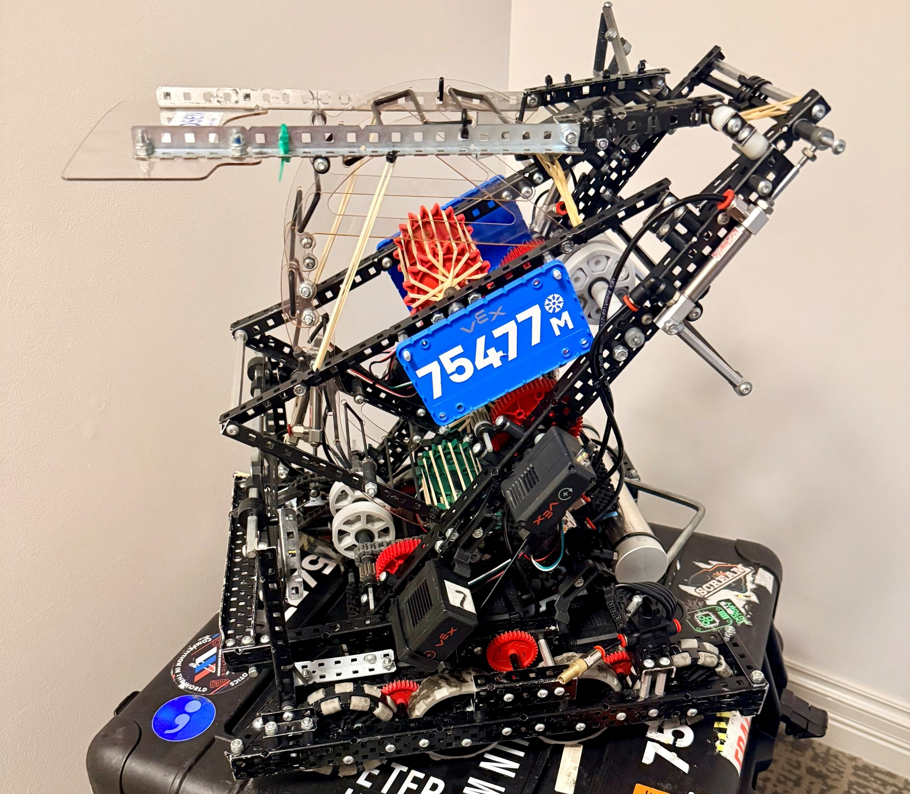
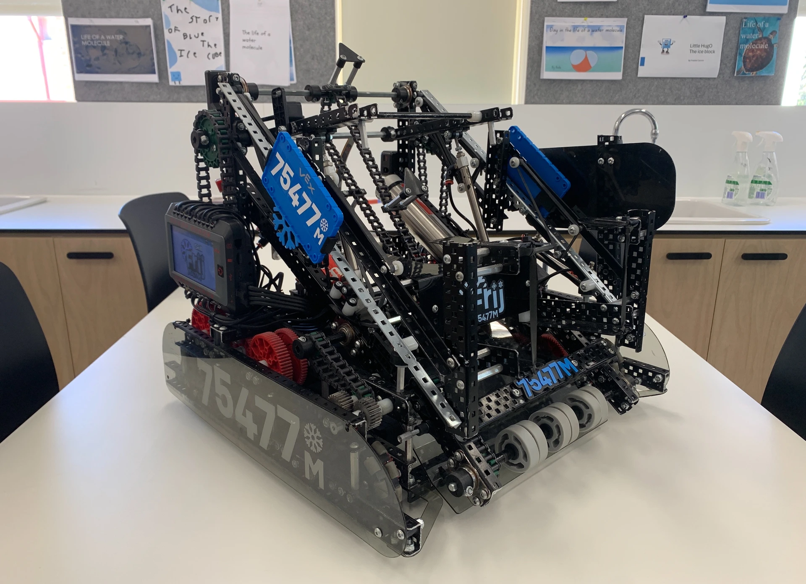
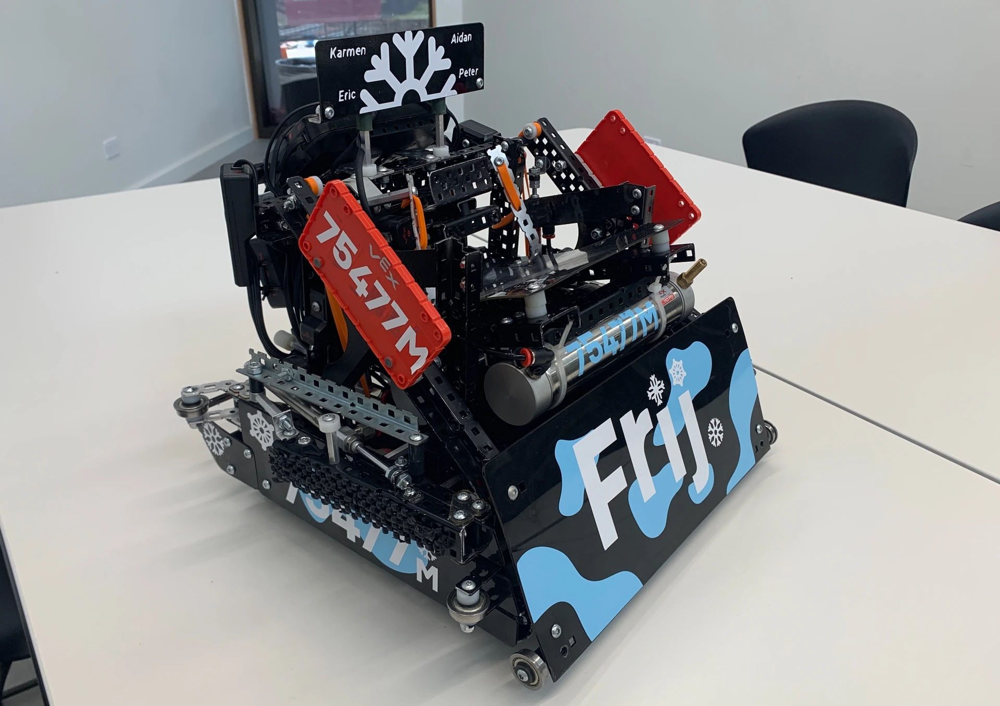

The challenge
Competition robotics compresses a product-development cycle into a season. The robot needs to perform under strict constraints, recover from imperfect field conditions and remain maintainable when time between matches is limited.
Engineering approach
Design choices are evaluated against real match performance—not only their ideal behaviour. That means considering how quickly a component can be serviced, how reliably a mechanism indexes, and whether software remains predictable after a long day of testing.
- Mechanisms developed around robust actuation and field-serviceable construction.
- Driver control and autonomous routines structured for consistent operation.
- Fast build-test-review cycles that turn match observations into practical changes.
Competition seasons
2025–2026
Push Back
Our robot's 'Frij' C++ code, including driver control and autonomous routines and engineering notebook recording the develop process, for the 2025–2026 'Push Back' season of the VEX Robotics Competition. This season, we won Tournament Champion and Build Award at the Australian Nationals and represented Australia at the VEX Robotics World Championship in April 2026.

2024–2025
High Stakes
Our robot's 'Frij' Python code, including driver control and autonomous routines and engineering notebook recording the develop process, for the 2024–2025 'High Stakes' season of the VEX Robotics Competition. This season, we won the Excellence Award at the Australian Nationals and represented Australia at the VEX Robotics World Championship in May 2025.

2023–2024
Over Under
Our robot's 'Frij' Python code, including driver control and autonomous routines and engineering notebook recording the develop process, for the 2023–2024 VEX Robotics Competition 'Over Under' season. We won the Judges Award at the Australian National Championship in December 2023.

What this project develops
The project is a practical lesson in engineering with constraints: choosing the right problem to solve, proving it on the field and communicating decisions clearly within a team.
Mechanisms matched to game constraints.
Robustness and serviceability under pressure.
Use test data and match feedback to improve.